My contribution
I led propulsion before becoming Chief Engineer. I owned vehicle architecture, requirements flowdown, integration planning, technical reviews, and launch readiness. I also developed motor and aerodynamic trade studies, manufactured fins and bulkheads, and rebuilt the recovery avionics package at the competition site.
One vehicle. Many interfaces.
Apollyon I was our entry in FAR Unlimited 2026: a 6-inch-diameter, 60-pound rocket standing 10 feet 8 inches tall. An M1939 motor had to lift the vehicle, its water ballast, and a collection of payloads, then return the whole system safely. The payloads included an experiment on 3D-print parameters under acceleration and temperature, live and recorded video, and a deployable drone.
I began the year as Propulsion Lead and became Chief Engineer in March 2026. My work expanded from motor selection and aerodynamic analysis to vehicle architecture, requirements flowdown, integration scheduling, technical reviews, and launch readiness across a 40-member team. I also stayed involved in the physical build: bulkheads, fins, alignment and drilling jigs, composite bonding, motor integration, and final assembly.
The common vehicle model was where those responsibilities met. Payload volume, recovery space, separation planes, wiring passages, and the motor load path all had to agree before individual subsystems could become a working vehicle.
{kind=link}
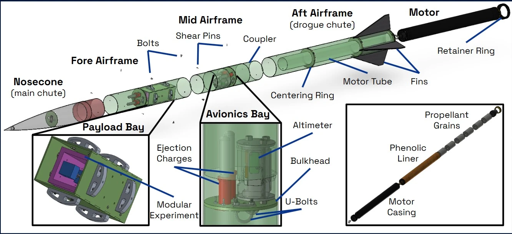
Turning a flight profile into structural loads.
I ran the motor-selection and aerodynamic-profile simulations, using the flight trajectory to define the conditions the airframe and fins would experience. OpenRocket and RASAero II supported the flight work; COMSOL was used to examine local aerodynamic loads, with SolidWorks supporting the structural evaluation.
One of the documented COMSOL cases evaluates the aft airframe at 400 m/s, 7,000 feet above sea level, and a 5-degree deflection angle. I integrated forces over selected faces to estimate loads on individual components. Those cases were analysis conditions used to examine margins; they were not a record of the actual flight speed.
{kind=link}
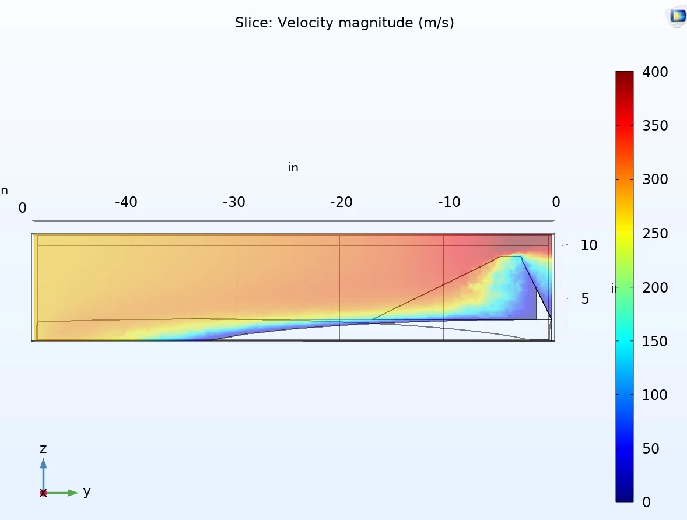
The middle airframe was a particularly important load path. The water ballast, payload bay, main parachute, and drone sat above it, while the motor pushed from below. The avionics inside also needed radio reception, limiting how freely we could reinforce the surrounding structure. The model shows load passing primarily through the outer airframe, with much less stress in the upper coupler.
The structural work combined dimensionally and materially representative models with the predicted flight and aerodynamic loads. The aim was to check the assembled vehicle through its flight phases, including the interfaces between components, rather than evaluate a strong-looking part in isolation.
{kind=link}
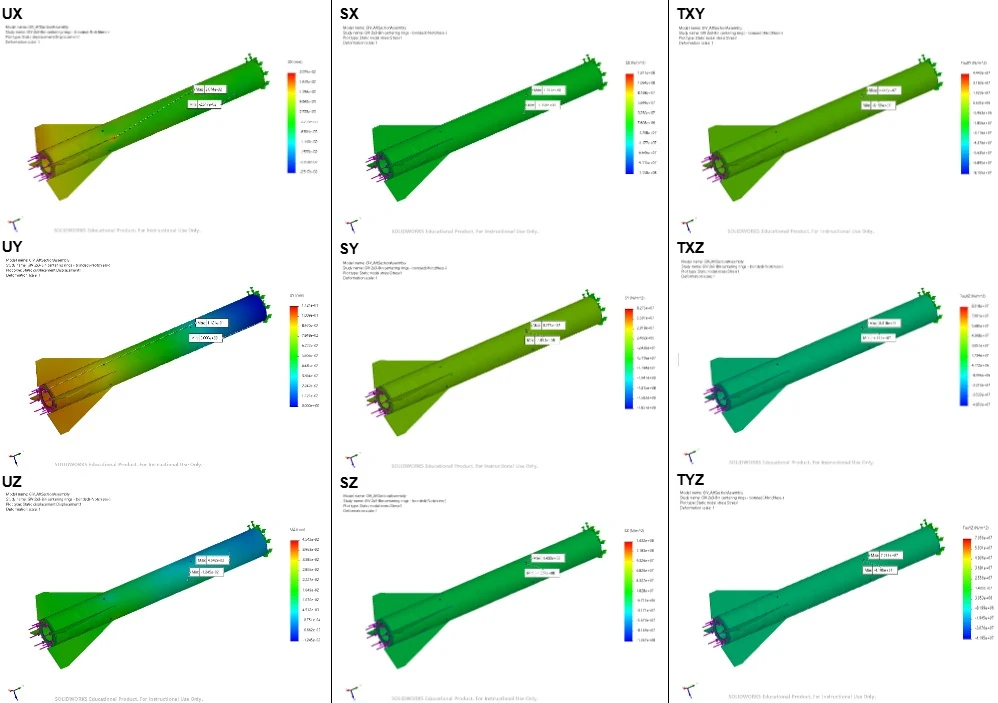
{kind=link}
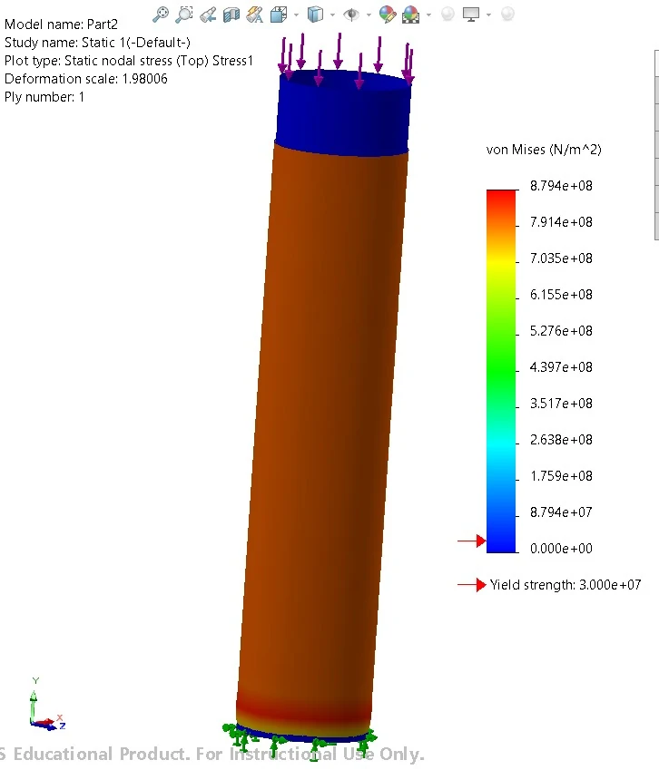
{kind=link}
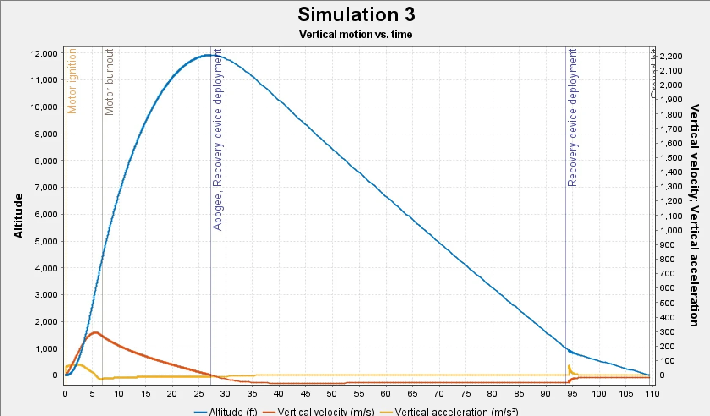
Changing the fin attachment method.
A major development from Gladius III was removing the fin slots. That change needed physical evidence. We made test articles and loaded them with weight plates to check the bonded attachment before committing to the new approach. I also experimented with epoxy cure methods, surface preparation, and timing to improve joint strength for the weight being added.
Once the attachment approach was validated, alignment became the next manufacturing problem. A slightly angled fin can produce an unwanted rolling moment. We designed and manufactured a jig to hold each fin in line with the body tube during assembly, making alignment part of the process rather than something to correct afterward.
{kind=link}
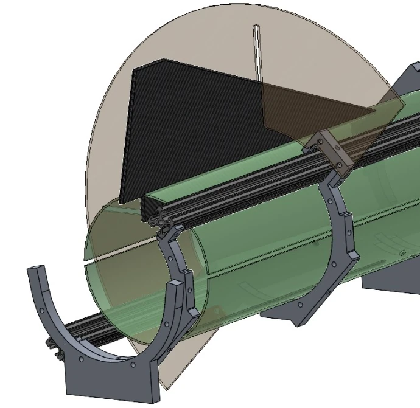
{kind=link}
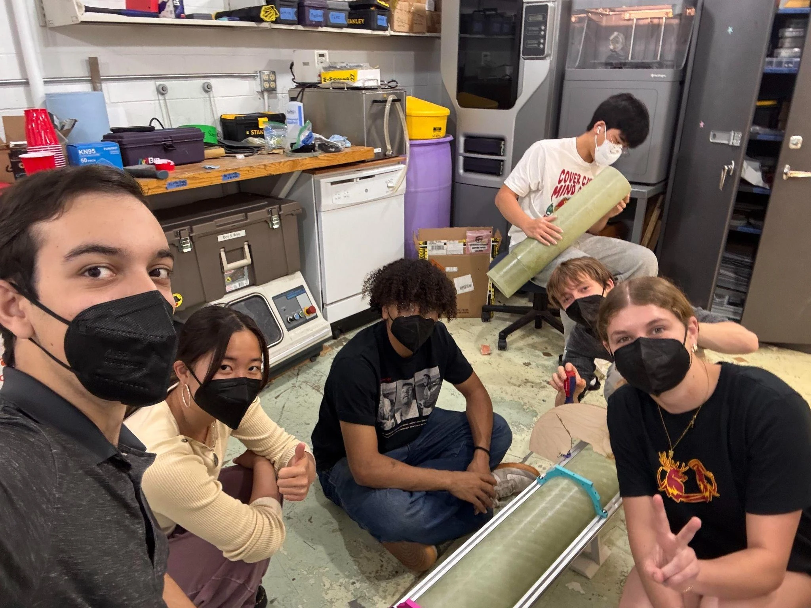
{kind=link}
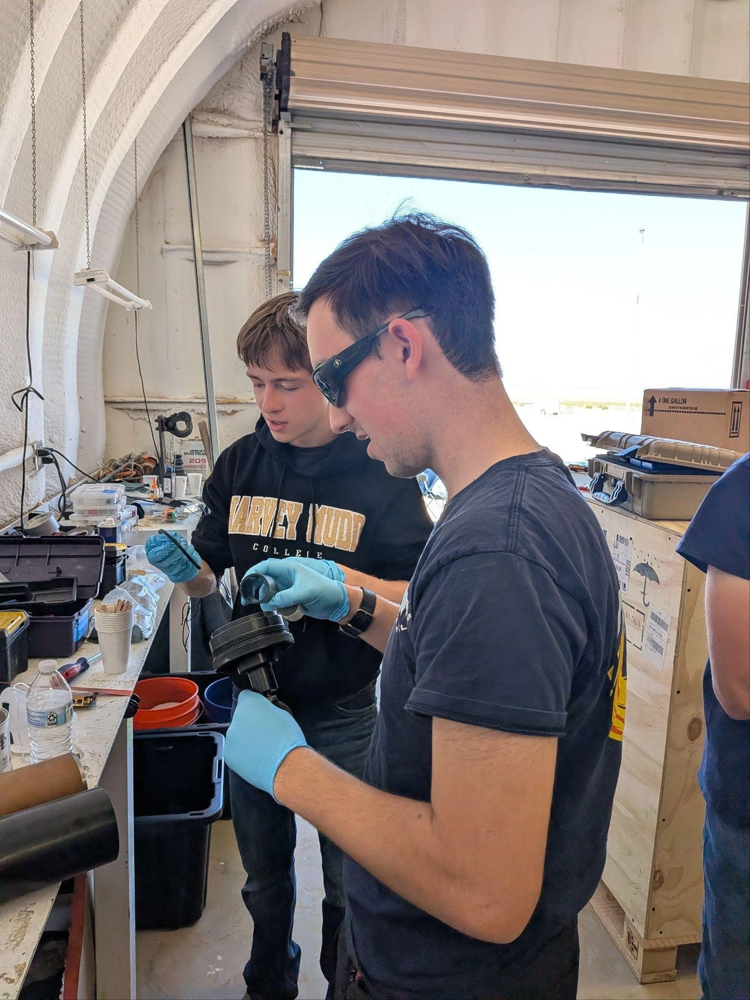
{kind=link}
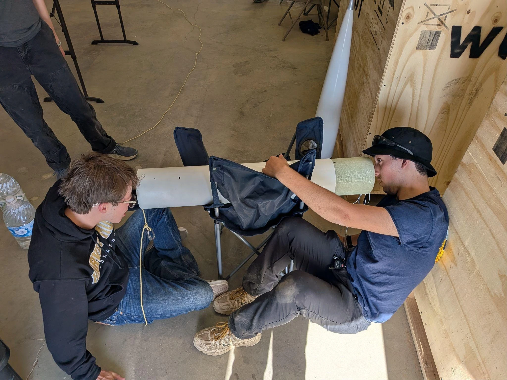
The part I had to get right at the range.
The most consequential problem surfaced late. As Chief Engineer, I had not caught that the avionics package’s physical mounting structure was still unfinished until the final week before launch. I brought my 3D printer to the hotel so we could complete the packaging. Then, during the wet-dress rehearsal the day before flight, the avionics system failed. The cause of that failure was not established.
I rebuilt the recovery package around an architecture I had developed through Hat Trick’s launch campaigns. At the launch site, I redesigned the system, wired it, designed and printed the mount, and completed a deployment ground test before flight. Hat Trick had given me direct experience with the connection, packaging, pressure, and configuration problems that can stop an otherwise capable flight computer from recovering a rocket.
{kind=link}
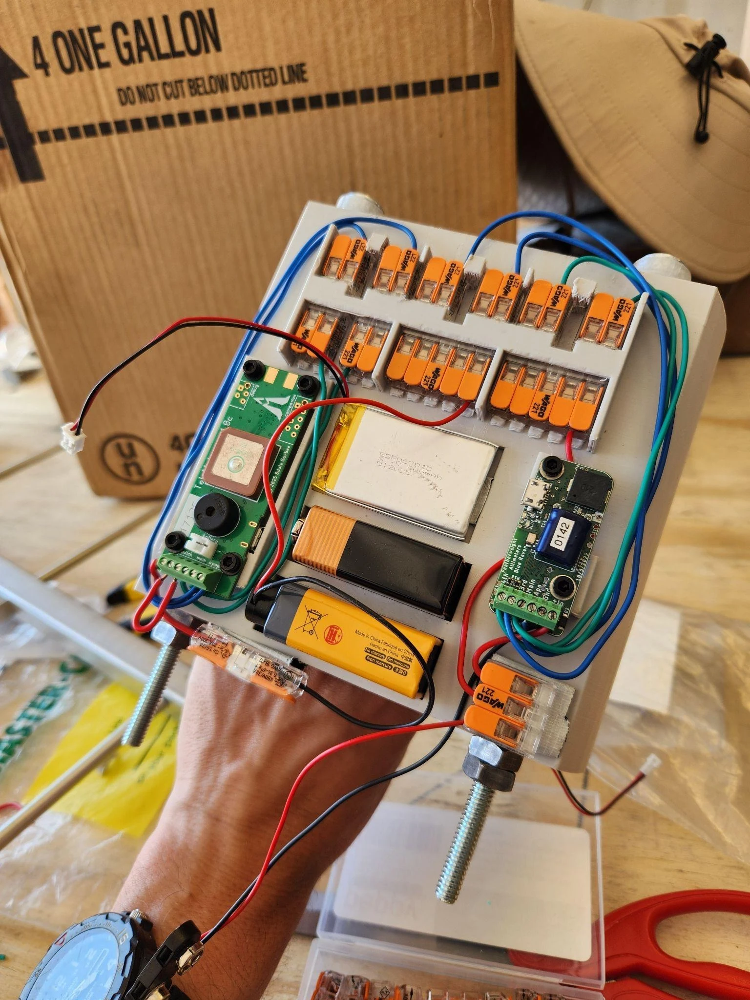
The package used two flight computers and four ejection charges across the drogue and main deployment stages. Each computer retained deployment authority, and the charge arrangement provided redundancy against an individual computer or charge failure. Accessible connections supported assembly, inspection, and attachment of the deployment leads.
The rebuild worked during the flight. The process lesson was broader than the electronics: physical packaging and integrated testing need explicit attention in the readiness review. A subsystem can be capable on a bench and still be incomplete as part of the vehicle.
{kind=link}
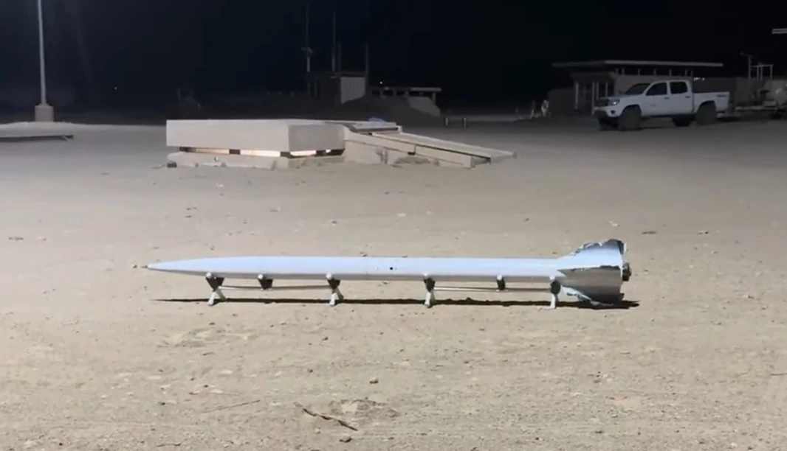
{kind=link}
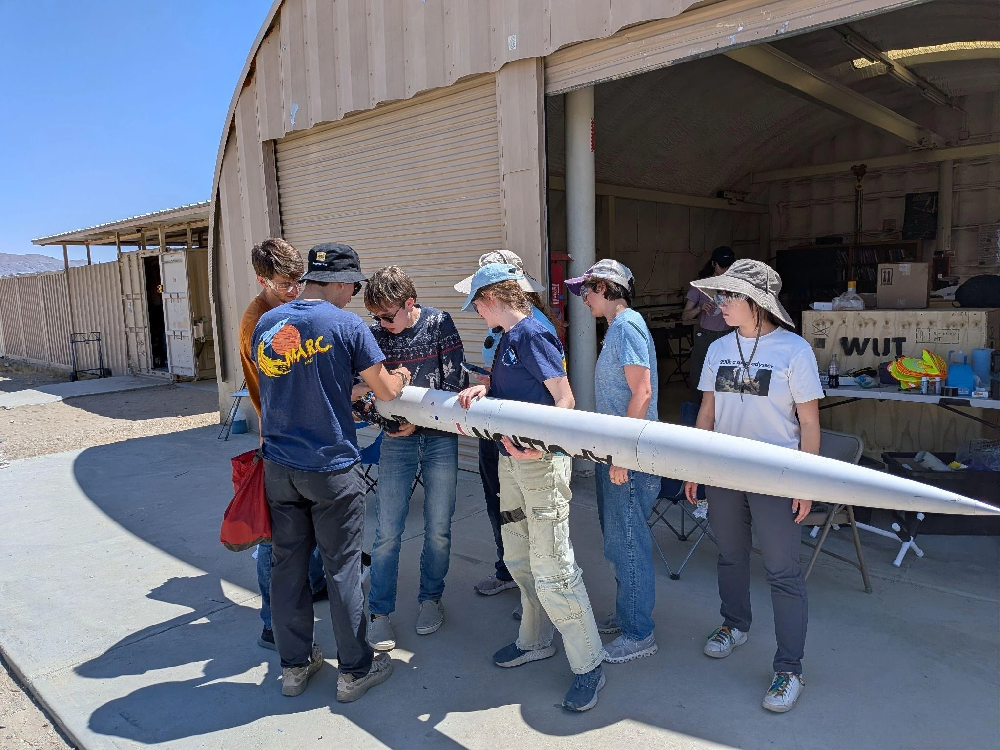
{kind=link}
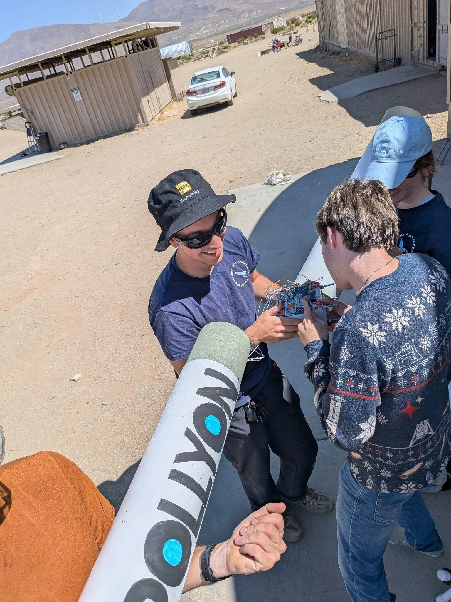
A first-place flight—and a better understanding of integration.
Apollyon I reached 11,492 feet and earned first place at FAR Unlimited 2026. The vehicle was recovered intact. The measured apogee was 508 feet below the approximately 12,000-foot prediction, a difference of about 4.2% relative to that prediction.
Onboard flight footage
2:05 · SilentThe result brought together the work I had done in propulsion, aerodynamics, structures, and recovery, but it also reflected the wider team’s payload, avionics, and manufacturing effort. My role was to help those pieces become one flight-ready system and to take responsibility when a critical interface was not ready.
The most valuable carryover was knowing that integration itself needs to be designed and tested. That now informs how I approach Atlas and Unknown Rider: the mount, wiring, power, configuration, and recovery path all belong in the engineering work from the beginning.
{kind=link}
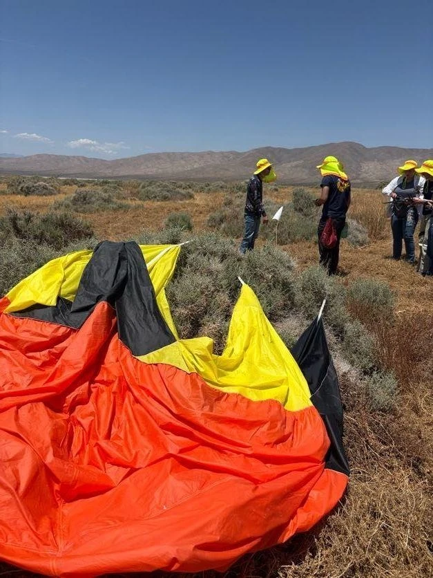
OpenRocket · RASAero II · MATLAB · COMSOL · SolidWorks